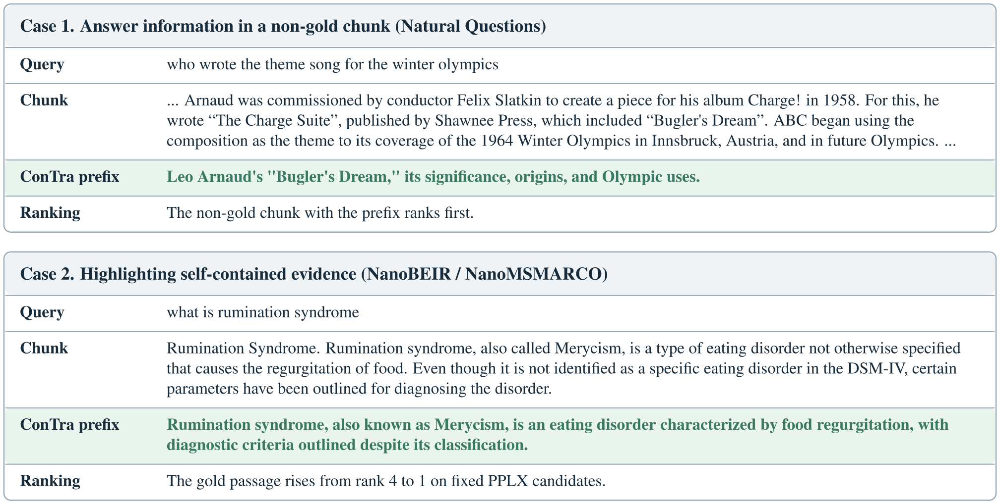
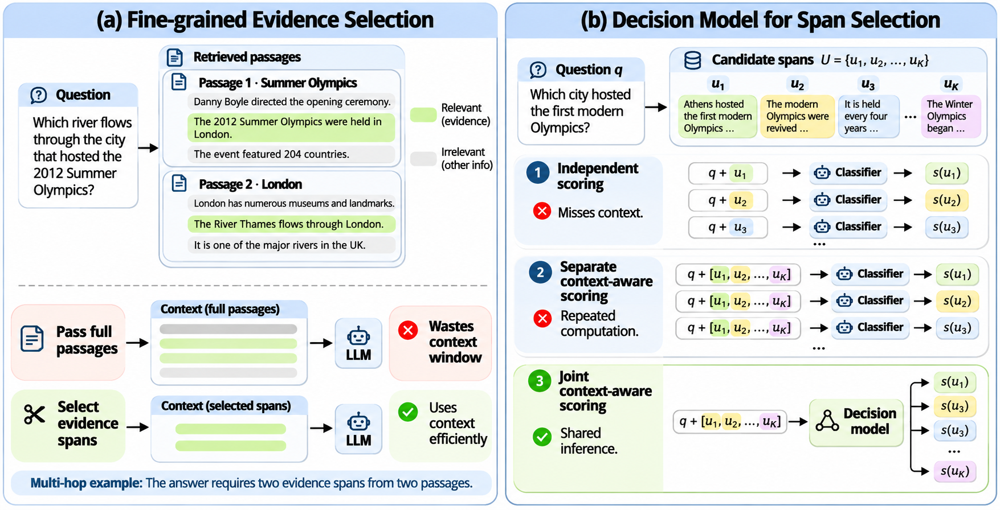

目录 · 7 节
1经营利润在这张表里，公司名却落在上一块2前缀能带进重排序，向量里的上下文带不进去3用检索反馈训练小模型写短前缀4走一遍：同一段前缀，两级检索都看得见5训练之后更准，前缀也更短6这对做文档索引的人意味着什么7局限经营利润在这张表里，公司名却落在上一块
给年报切块建索引，很容易碰到这种事：查询问的是某家公司某一财年的经营利润，数字就在这张表里，公司名和年份却留在上一节标题里，一刀切块就切分开了。
向量召回先按表格长相把候选拉出来，别家公司、相邻年份的表长得差不多，很容易混进来；到了重排序这一步，reranker 读的还是表格原文，标题不在块里，压根没依据把错公司踢下去。
香港中文大学（深圳）的 Jiajun Hou 和 Jingbang Chen 这篇论文盯的就是这个矛盾：长文档得按块切，但每个块又必须带着把它找对、排对所需的文档上下文。之前有两条路子。一条把周围文档揉进 chunk 向量，比如先编码文档再按块池化的 late chunking，以及用文档内负例训出来的 InSeNT、经过扩散预训练再做对比检索训练的 PPLX（Perplexity 的上下文编码器），还有提供文档感知块向量的 Voyage-context；改的是向量，reranker 拿到的仍是原始块文本。另一条是 Anthropic 的做法：提示大模型给每块写一段前缀，检索和重排序都读「前缀 + 原文」。前缀能离线写好、跨查询复用，但建索引太贵；而且在以前偏重单级检索的评测里，这类前缀经常打不过头部的上下文编码器。
问题在于，那些评测主要看 embedding 相似度本身，没把重排序算进来。可读前缀是明文，两级都能用，单看第一级分数容易低估它在多阶段管线里的收益。他们提出的框架叫 ConTra（全称 Context That Travels）：用强化学习训出 0.8B、2B、4B 几个小模型，建索引时为每块写一段短前缀，把「前缀 + 原文」连同对应的 embedding 一起存下来；查的时候，向量检索和重排序共用这一段文字。在 ConTEB（专门测「离开文档上下文是否还找得对块」的检索基准，覆盖保险报表、生物医学文章等八个任务）上，ConTra-2B 的重排序 nDCG@10 做到 0.8525，比按 Anthropic 提示词跑的 9B 高 2.46 分，也明显高于只把原文交给 reranker 时的 PPLX-4B（0.7310）。短文档集合上，它建索引比 9B 提示管线快 7.74 倍。作者还另外搭了 RealContextBench 基准，用来看这套做法换到其他应用、或者周围掺进干扰文本时还稳不稳。
可读前缀能同时服务检索和重排序；只把上下文写进向量，召回更高也不会自动变成更好的最终排序。训练和测试都在公开检索基准上。
前缀能带进重排序，向量里的上下文带不进去
两条路差在哪，看图就能对上：上半条把生成的前缀拼在原文前面，embedding 和 reranker 都能读到；下半条只把上下文塞进向量里，reranker 读到的仍是原始块。

作者在 ConTEB 上跑了一组对照：先拿没训过的 Qwen3.5-2B 按 Anthropic 提示词写好前缀，固定不动，只改前缀出现在哪一级。候选检索用 Qwen3-Embedding-4B 取前 15 条，重排序一律用 Qwen3-Reranker-4B。下表是八个任务的宏平均。
| 检索看到的文本 | 重排序看到的文本 | Recall@15 | 最终 nDCG@10 |
|---|---|---|---|
| 原文 | 原文 | 0.7691 | 0.6483 |
| 前缀 + 原文 | 原文 | 0.8475 | 0.6924 |
| 原文 | 前缀 + 原文 | 0.7691 | 0.6940 |
| 前缀 + 原文 | 前缀 + 原文 | 0.8475 | 0.7585 |
| PPLX-4B 向量 | 原文 | 0.9387 | 0.7310 |
| PPLX-4B 向量 | 前缀 + 原文 | 0.9387 | 0.8135 |
编码前加上前缀，相关块更好区分了，所以有更多 gold 块能进到前 15，Recall@15 从 0.7691 升到 0.8475；哪怕 reranker 仍只读原文，候选池变好，最终 nDCG@10 也会从 0.6483 升到 0.6924。反过来，候选集合不动、只让 reranker 看见前缀，最终分数从 0.6483 升到 0.6940。两级都用，升到 0.7585。
看 PPLX-4B 就更明显了：它的召回其实更强，Recall@15 是 0.9387，embedding nDCG@10 有 0.8210，都压过这段未训练的 2B 前缀。可一旦 reranker 只能读原文，最终分数反而停在 0.7310，打不过两级都用前缀的 0.7585。原因很直接：帮它捞回这块内容的上下文锁在向量里，读原文的 reranker 借不到力。把同一段前缀贴到 PPLX-4B 已经找回的候选上，一条新候选都不加，最终 nDCG@10 就升到 0.8135。高召回不会自动变成更好的最终排序。
用检索反馈训练小模型写短前缀
单靠提示词，2B 模型已经能看出前缀的效果；但想写得更准、建索引更便宜，作者直接拿检索反馈上了强化学习。生成器拿到的是源窗口和目标块：文档放得进预算就读全文，放不下就按原文顺序取相邻完整块，再把目标块单独标出来。推理时不看查询，写好的前缀可以跨查询复用——索引阶段每块只写一次，存下来的就是拼好的文本和对应向量。
训练数据取自 ConTEB 的训练集。生成器很容易写成宽泛的主题摘要，对区分相近块没多大帮助。作者先从 10 万个 query–target 对里，用 GPT-6 Luna 对照原文抽取出缺失的实体、日期或关系，再分别写成带具体身份信息的前缀和只谈主题的泛化前缀。接着过两道筛子：一道看同一输入的多个候选前缀之间有没有足够的奖励差异，另一道要求具体前缀的 nDCG@10 至少比泛化前缀高 0.05，且不低于不加前缀。最后留下 5,760 对。三个规模都从 Qwen3.5 初始化，直接强化学习跑一个 epoch。
奖励由四项相加：
R = R_emb + R_rank + R_fact + R_len
前两项算的都是「加上前缀」相对「只用原块」的边际收益，都直接打在目标块上，在线训练不跑全库检索，也不看它在候选集合里的名次。embedding 这边用混合查询向量，75% 取自原始查询，25% 取自带文档开头的查询，免得训练查询里的「他」「该设施」和补进来的实体名对不上号；R_emb 取增强块与原块相对这个混合查询的余弦相似度之差，再裁到 [-1, 1]：
R_emb = clip(cos(混合查询, 前缀+块) - cos(混合查询, 原块), -1, 1)
推理时照旧用原始查询编码。重排序这边取 reranker 的相关性 logit 差值，写成
R_rank = 0.025 tanh(z(查询, 前缀+块) - z(查询, 原块))
幅值压在 [-0.025, 0.025]，只做细粒度决胜，不压过更平滑的 embedding 信号。要是格式坏掉或写到一半截断，直接记 -1.5，低于合法前缀的理论最低分 -1.475。
只靠相关性容易被钻空子。比如查询在问某位高管的决策，把这位高管的名字硬安到另一人的段落前面，embedding 相似度和 reranker 分数都会涨，可和原文完全相反。所以他们冻结了一个 Qwen3.5-4B 当裁判，盯两件事：前缀有没有原文支持，以及这件事算不算在目标块头上。支持度过了 0.75 就不再加分，防止模型专写好核验、却没区分度的空话；低于阈值则按缺口扣分，最多扣到 -0.25。文中举过例子：支持度为 0.45 时，这项是 -0.10，相当于最大正向重排序奖励的四倍。 Hoot 说

左右滑动看三步。前两步的 0.45 和 -0.10 是正文里的例子；重排序奖励的上限 0.025 也来自正文公式。第三步把两项相加得到 -0.075，是按这两项重算的，正文没有写出这个合计。总奖励还要再加向量项和长度项。
出处
正文本节：R = R_emb + R_rank + R_fact + R_len；R_rank = 0.025 tanh(Δz)，幅度落在 [-0.025, 0.025]；支持度超过 0.75 不加分，低于阈值按缺口扣到最多 -0.25；文中例子支持度 0.45 时 R_fact = -0.10。-0.075 由 0.025 + (-0.10) 重算。长度也必须卡住。如果每块开头都先贴一段整篇文档的背景，相邻块就会变得很像，扎堆去抢同一类查询。前 16 个 token 不罚，超出后线性加重，到 112 个 token 封顶为 -0.2。前缀变短，顺带也减少了生成步数和建索引时编码器要读的输入。
优化算法用 DAPO（按组比较奖励、并丢掉组内奖励全相同样本的强化学习算法）。每条样本采 16 个前缀，交给冻结的 embedding 模型、reranker 和事实裁判打分，全程只更新生成器。
走一遍：同一段前缀，两级检索都看得见
回到开头那张缺了公司名的表，顺着流程走一遍，看看同一段前缀是怎么进到两级的。下面用到的公司名和年份——Oakmere Group、2024 财年——是虚构示意，只用来把步骤说清；ConTEB 上的分数取自论文表 1 的八任务宏平均，不是这一张表示例的单独结果。
原块里只剩表格数字。查询问的是「Oakmere Group 2024 财年的经营利润」，公司名和年份却留在上一块标题里。向量检索按表格版式找相似块，别家公司的表很容易进前 15；reranker 读到的也是没身份的裸表，改不过来。对应到表 1，两级都只看原文时，Recall@15 是 0.7691，最终 nDCG@10 是 0.6483。
建索引时，生成器扫一遍源窗口，看到目标表旁边的标题，写出一段示意前缀，比如「Oakmere Group 2024 财年经营利润表」，拼在原表前面。这段文字不绑当前查询，进索引就能一直复用。
到了检索这一级，embedding 编的是「前缀 + 原表」。Oakmere Group 和 2024 财年进了向量，目标块更好跟查询对上，也更容易和别家公司的表分开。表 1 里，只把前缀用于检索，Recall@15 就升到 0.8475；哪怕 reranker 仍读原文，光靠候选池变好，最终分数也升到 0.6924。
再往下进重排序，reranker 读同一段「前缀 + 原表」，直接就能核对公司和财年是不是 Oakmere Group、2024 财年。候选集合不动、只打开这一级，最终分数从 0.6483 升到 0.6940；两级都打开，到了 0.7585。
把这条路跟只改向量的路对一下就更清楚。PPLX-4B 召回更强，Recall@15 到 0.9387，可 reranker 看不见向量里的上下文，最终停在 0.7310，反而低于上面的 0.7585。把同一段可读前缀贴到它已经找回的候选上，一条新候选不加，最终分数就升到 0.8135。候选其实已经够多了，卡住排序的是重排序读不到那份身份信息。
训练之后更准，前缀也更短
拿检索反馈把生成器训完，同样的两级管线，分数明显高于靠提示词跑的更大模型。ConTEB 上依然用 Qwen3-Embedding-4B 做检索、Qwen3-Reranker-4B 重排前 15 条。
| 方法 | 检索 nDCG@10 | 重排序 nDCG@10 |
|---|---|---|
| Qwen3-Embedding-4B（无上下文） | 0.5484 | 0.6483 |
| PPLX-4B | 0.8210 | 0.7310 |
| Voyage-context-4 | 0.7981 | 0.7300 |
| 提示 Qwen3.5-9B | 0.7376 | 0.8279 |
| ConTra-2B | 0.7469 | 0.8525 |
ConTra-2B 的重排序分数做到 0.8525，比提示 9B 的 0.8279 高 2.46 分。PPLX-4B 和 Voyage-context-4 在检索阶段分更高，可 reranker 只读原文，最终只落在 0.7310 和 0.7300。跟同规模的提示基线比，0.8B、2B、4B 的最终分数分别涨了 8.15、9.40 和 3.55 分。而且写好的前缀不必重训，换到 Qwen3 的 0.6B 或 8B 检索模型、把候选池从 10 扩到 20，这层优势还在。拉大候选池反倒帮了前缀一把，因为 reranker 看得见身份信息，有机会把排在更后面的相关块提上来；PPLX 和 Voyage 却会随候选增多往下掉。
参数规模直接卡住了前缀能写到什么程度。小一点的生成器更爱写宽泛的主题摘要，大一点的模型才抽得出具体实体和关系。Insurance 这项任务最明显：要在长文档里把格式相近的表对上别处的国家标题。训前 4B 和 9B 就已经到 1.000；0.8B 训前是 0.199，训后反而是 0.160。到了这一档参数量，强化学习补不上长程结构。
拆开看消融，拿掉长度控制在每个规模上造成的总体掉分都最大。4B 上平均前缀从 17.7 个 token 涨到 239.2，最终 nDCG@10 从 0.8465 掉到 0.7084——相邻块全贴上相同背景，开始互相抢查询。拿掉重排序反馈最伤 2B：Insurance 从 1.000 跌到 0.159；2B 本身能在原文里找到国家标题，是这项奖励逼它把标识留下来。至于事实校验，拿掉后 2B 的最终检索分掉得不大，但在 200 条配对人工检查里，前缀事实错误率从 4.5% 升到 16.0%。nDCG@10 按 chunk 编号计分，编造但迎合查询的前缀照样能把正确块推到前面；一旦把这些增强文本直接喂给问答系统当证据，不可靠的前缀就会把上下文带偏。
建索引耗时在单卡 H100 80GB 上测，各跑三次取中位数，包含前缀生成和向量计算。短文档集合是 FairytaleQA 的 23 篇、342 块。因为训练后前缀短了不少，ConTra-2B 只用 3.75 秒，所以比提示 9B 的 29.02 秒快 7.74 倍，也比 PPLX-4B 的 8.08 秒快 2.15 倍。
长文档集合是 Natural Questions 里的 51 篇、1,027 块。ConTra-2B 用了 55.58 秒，比提示 9B 的 268.12 秒快 4.82 倍，比 PPLX-4B 的 77.97 秒快 1.40 倍。同在 2B 这一档，训练把短文档索引从 7.87 秒降到 3.75 秒（也就是文中说的最多 52.3%），原因就是每块生成长度从 82.4 个 token 缩到了 23.8。
哪怕快了这么多，它还是明显慢于直接用 Qwen3-Embedding-4B 编码原文，后者短文档只要 1.01 秒，长文档只要 7.92 秒。好在多出来的前缀文本很轻，相对原文加向量，两个集合分别只增加 0.96% 和 0.79%。
再看跨任务表现。只在 ConTEB 上训过的 ConTra-2B，拉到 RealContextBench 的八项设置里，总体重排序 nDCG@10 从同规模提示基线的 0.6456 升到 0.6692，排在文中最高；不过 Voyage-context-3 是 0.6636，提示 9B 是 0.6632，算下来也就高出约 0.006。
更有意思的是重排序后的位次翻转。金融问答集合 FinanceBench 上，embedding 阶段还是 Voyage-context-4 领先（0.524 对 0.402），重排序后翻成了 ConTra-2B 的 0.5248 对 0.4692。财报常常只列数字不写公司名，前缀把公司身份补成明文，reranker 才核对得上。
抗干扰这边，塞进随机邻居后，PPLX-4B 的重排序掉 2.66 分，提示 2B 只掉 1.19 分；训完之后，ConTra-4B 在 NanoBEIR（基准里用来对照周围文本的一组设置）三种上下文上的平均重排序从 0.6831 升到 0.7138。把 PPLX-4B 的召回和 ConTra 前缀拼在一起也能跑：会议、故事、技术支持这类集合上，混合管线分更高，比如 2B 在会议记录集合 QMSum 上从 0.3811 升到 0.4140；但在随机干扰下，单跑 ConTra-2B 是 0.7102，混合管线只有 0.6729，还得额外背一份 PPLX 的编码成本。

图 2 里能看到两种互补的写法。Natural Questions 的例子里，查询问谁写了冬奥会主题曲，标注答案是 Leo Arnaud。ConTra-2B 给相邻段落补上前缀「Leo Arnaud's "Bugler's Dream," its significance, origins, and Olympic uses.」，这块排到第 1，真正的 gold 块反而掉出前五。按 chunk 编号计分，这次不得分，可排在最前的文本已经带着完整答案。另一例没有周围文档：目标段本身就写了 rumination syndrome、别名 Merycism，以及主要症状是食物反流，前缀把这些属性拎到了段首。PPLX 的候选不动，gold 段从第 4 升到第 1。相关性奖励比的是增强块相对原块的查询相似度和相关性 logit 增益，在线训练并不做全库检索，也不计算排名变化；所以有外围上下文时模型就往外补，周围没什么可写时，也会把块里已有的关键信息往前拎。
这对做文档索引的人意味着什么
在本文评估过的管线里，可读前缀能让文本 reranker 用上文档上下文，并改善最终排序。
已经在跑「embedding 召回 + 文本 reranker」的团队，可以把身份类信息做成短前缀，建索引时写一次，查的时候两级共用。ConTra-2B 说明没必要硬靠提示 9B 去写，小模型加一轮检索反馈就能超过它，短文档上建索引也快得多。奖励里的长度和事实两项不能省：不卡长度，相邻块会互相抢查询；拿掉事实校验，抽查中的事实错误率会从 4.5% 涨到 16.0%。语料干净、更在意召回时，可以把强上下文编码器的候选和这段前缀拼给 reranker；周围噪声多、更在意建索引成本，单走 ConTra 更省事。0.8B 写不好跨得很远才能对上的标题，在 Insurance 任务上训完也没补上，这个规模别指望它解析长文档结构。
局限
ConTra 只在 ConTEB 的 5,760 对上做过强化学习，RealContextBench 属于换任务评测；总体重排序分虽然排在最前，但跟 Voyage-context-3、提示 9B 只差约 0.006，不能当成换了场景就大幅领先。就算加上事实校验，200 条抽查里仍有 4.5% 的前缀存在事实错误。建索引还是明显慢于直接编码原文。按 chunk 编号计分时，相邻块被补全了答案、自己却排到前面，可能被算作没召回正确块，第 8 节的 Leo Arnaud 一例就是这样。
读完这篇，你觉得
夜读鸮记下了，谢谢你的反馈。
点一下即可，无需登录；再点一次撤回。只统计匿名次数，不记录你是谁。
相关论文RELATED
 Retrieval · 2026-11-02Retrieving from Your Own Mistakes: On-Policy Training of Embedding Models for Multi-Hop Retrieval-Augmented Generation多跳检索里的链式 embedding 检索器，训练和上线时看到的历史不一致，这篇论文给出一个不加大模型调用的修法。这类检索器每一步把问题和已找到的段落拼在一起再找下一段，训练时历史全是正确段落，上线后却常混进它自己找错的段落。在四跳的 MuSiQue 问题上，到第三步已有 70% 的检索状态带了错段。作者每轮训练都让当前模型自己跑一遍，拿它真实走到的状态来训练，目标设为还没找到的最早那段正确段落。同样配方下，前五段里把证据找全的问题比例从 44.6% 提到 50.5%。
Retrieval · 2026-11-02Retrieving from Your Own Mistakes: On-Policy Training of Embedding Models for Multi-Hop Retrieval-Augmented Generation多跳检索里的链式 embedding 检索器，训练和上线时看到的历史不一致，这篇论文给出一个不加大模型调用的修法。这类检索器每一步把问题和已找到的段落拼在一起再找下一段，训练时历史全是正确段落，上线后却常混进它自己找错的段落。在四跳的 MuSiQue 问题上，到第三步已有 70% 的检索状态带了错段。作者每轮训练都让当前模型自己跑一遍，拿它真实走到的状态来训练，目标设为还没找到的最早那段正确段落。同样配方下，前五段里把证据找全的问题比例从 44.6% 提到 50.5%。 Retrieval · 2026-11-02Contextual Embeddings Beyond the Gold Chunk上下文 embedding 的训练和评测都默认一个问题在文档里只有一个相关段，这篇论文指出这个假设在 RAG 里不成立。回答一个问题往往还需要交代说的是哪个产品、哪一年的段落，可现有训练把同一文档里答案段以外的段一律当负例，这些佐证段反而被压低。作者拿一个现成的上下文压缩模型当老师，它原本负责从检索到的文档里挑出和 query 相关的片段，会给每个 token 打相关度分。每段取段内最高几个 token 分的平均当段分数，embedding 模型去拟合这个分数，不再需要标注答案段。在新建的诊断基准上，9B 模型前 10 段里找到答案的比例是 45.5%，最强基线 voyage-context-4 是 31.1%。
Retrieval · 2026-11-02Contextual Embeddings Beyond the Gold Chunk上下文 embedding 的训练和评测都默认一个问题在文档里只有一个相关段，这篇论文指出这个假设在 RAG 里不成立。回答一个问题往往还需要交代说的是哪个产品、哪一年的段落，可现有训练把同一文档里答案段以外的段一律当负例，这些佐证段反而被压低。作者拿一个现成的上下文压缩模型当老师，它原本负责从检索到的文档里挑出和 query 相关的片段，会给每个 token 打相关度分。每段取段内最高几个 token 分的平均当段分数，embedding 模型去拟合这个分数，不再需要标注答案段。在新建的诊断基准上，9B 模型前 10 段里找到答案的比例是 45.5%，最强基线 voyage-context-4 是 31.1%。 Retrieval · 2026-11-04WeSearch: A Unified Model-Centric Retrieval Framework for WeChat Search微信搜索的 WeSearch 用一个模型替掉了原来并行的多路召回：先按 query 找出相关的文档簇，再在这些簇里逐篇给文档打相关分，把粗筛和精细判断分开。它不像生成式检索那样给每篇文档一个固定的层级 Semantic ID，那种做法默认一篇文档只走一条语义路径，可一篇文章常常同时讲好几件事。索引可以增量更新，模型从原来的每月更新变成每周、必要时每天刷新。它已作为微信搜索的主召回上线，一个月全量 A/B 里 CTR 提升 0.68%，检索资源成本降了 41%。多取一些簇来保召回，谁更相关交给逐篇打分。
Retrieval · 2026-11-04WeSearch: A Unified Model-Centric Retrieval Framework for WeChat Search微信搜索的 WeSearch 用一个模型替掉了原来并行的多路召回：先按 query 找出相关的文档簇，再在这些簇里逐篇给文档打相关分，把粗筛和精细判断分开。它不像生成式检索那样给每篇文档一个固定的层级 Semantic ID，那种做法默认一篇文档只走一条语义路径，可一篇文章常常同时讲好几件事。索引可以增量更新，模型从原来的每月更新变成每周、必要时每天刷新。它已作为微信搜索的主召回上线，一个月全量 A/B 里 CTR 提升 0.68%，检索资源成本降了 41%。多取一些簇来保召回，谁更相关交给逐篇打分。 Retrieval · 2026-10-25When Agentic Retrieval Fails Silently: Framework and Production Evidence from a Creative AI Assistant在 Adobe Express 的智能助手里，按用户看到排序结果并据此行动来算的检索指标不再成立：聊天入口的改写率是 44.4%，比同一套检索系统支撑的模板库搜索还高，后者只有 33.1%。原因是两边的改写不是一回事。模板库里改写，是结果不相关、换个词再搜；聊天里改写，多数是看到生成结果后想改一改。更意外的是，助手只在 0.31% 的提示上真正调用了检索。论文提出的评估框架分三层测，检索触发时用相关性标注直接给返回结果打分，再看返回的素材有没有被用上，最后看用户是否导出；四个日志字段分别记下检索编号、返回的完整列表、每次行动用了哪个素材、这个素材出自哪次检索，把使用和导出连回那次检索。
Retrieval · 2026-10-25When Agentic Retrieval Fails Silently: Framework and Production Evidence from a Creative AI Assistant在 Adobe Express 的智能助手里，按用户看到排序结果并据此行动来算的检索指标不再成立：聊天入口的改写率是 44.4%，比同一套检索系统支撑的模板库搜索还高，后者只有 33.1%。原因是两边的改写不是一回事。模板库里改写，是结果不相关、换个词再搜；聊天里改写，多数是看到生成结果后想改一改。更意外的是，助手只在 0.31% 的提示上真正调用了检索。论文提出的评估框架分三层测，检索触发时用相关性标注直接给返回结果打分，再看返回的素材有没有被用上，最后看用户是否导出；四个日志字段分别记下检索编号、返回的完整列表、每次行动用了哪个素材、这个素材出自哪次检索，把使用和导出连回那次检索。
Retrieval · 2026-11-16CURATOR: Scalable Fine-grained Evidence Selection for Retrieval-Augmented Generation using Decision ModelsRAG 通常把检索到的整段文字都塞给大模型，可真正能回答问题的往往只有其中几句。挑出这几句并不容易：一句话单看像是无关，要结合其他检索内容才知道该不该留。逐句带着全部上下文判断又太贵。决策模型能在一次推理里同时给很多候选句打分，每个判断都看得到周围的句子，但作者发现，同时要做的判断越多，它分辨有用证据的能力越差，而一次检索常常就带来几百个候选句。CURATOR 专门训练决策模型从大候选池里挑出数量不定的支撑句，保住一次打分的效率。在 128 个 token 的上下文预算下，它在没见过的数据集和领域上平均把证据召回提高 17.0%，下游回答质量提高 17.4%。上下文越紧，挑对证据比塞进更多段落更要紧。 Retrieval · 2026-11-13PCG-RAG: Progressive Compositional Grounding for Retrieval-Augmented Generation in Complex Web Question Answering复杂网页问答常常要先从几条线索里认出说的是谁，再去查它的某个属性，而常见的错法是只对上一条线索就把名字当成定论。论文里的例子是一座改建成美术馆的伦敦发电厂，系统只凭伦敦和发电厂就认定是 Battersea，接着查到的建筑师其实属于另一座楼。PCG-RAG 把这种只对上部分线索的名字当作搜索线索，用它去补查还没对上的条件，确认之后才让后续问题依赖它。最后生成答案时，它把确认身份的段落和回答属性的段落一起放进上下文。在 BrowseComp-Plus 上，它的准确率比最强基线高 5.43 个百分点，token 用量还少了 82.98%。先认准对象再查属性，比一次堆更多检索结果更有效。
Retrieval · 2026-11-13PCG-RAG: Progressive Compositional Grounding for Retrieval-Augmented Generation in Complex Web Question Answering复杂网页问答常常要先从几条线索里认出说的是谁，再去查它的某个属性，而常见的错法是只对上一条线索就把名字当成定论。论文里的例子是一座改建成美术馆的伦敦发电厂，系统只凭伦敦和发电厂就认定是 Battersea，接着查到的建筑师其实属于另一座楼。PCG-RAG 把这种只对上部分线索的名字当作搜索线索，用它去补查还没对上的条件，确认之后才让后续问题依赖它。最后生成答案时，它把确认身份的段落和回答属性的段落一起放进上下文。在 BrowseComp-Plus 上，它的准确率比最强基线高 5.43 个百分点，token 用量还少了 82.98%。先认准对象再查属性，比一次堆更多检索结果更有效。 Retrieval · 2026-11-12OpticalRAG: Pixel-Space Compression for Token-Efficient Retrieval-Augmented GenerationRAG 想省 token，常见做法是在文本上删词或做摘要，压得越狠，丢的细节越多。OpticalRAG 换了个方向：把文档渲染成页面图片，用冻结的视觉编码器编成视觉 token，检索和压缩都在这些视觉 token 上做。文本 query 经过一个轻量投影进入同一个视觉特征空间去找相关内容，再由一个以 query 为条件的交叉注意力小模块，把检索到的 256 个视觉 token 压成 16 个交给大模型。在 LongBench-v2 上，它比不做检索的底座模型高 5.17 分。另一个基准上，保留几百上千个文本 token 的压缩方法原始分更高，它的长处是用极少的 token 拿到接近的分数。
Retrieval · 2026-11-12OpticalRAG: Pixel-Space Compression for Token-Efficient Retrieval-Augmented GenerationRAG 想省 token，常见做法是在文本上删词或做摘要，压得越狠，丢的细节越多。OpticalRAG 换了个方向：把文档渲染成页面图片，用冻结的视觉编码器编成视觉 token，检索和压缩都在这些视觉 token 上做。文本 query 经过一个轻量投影进入同一个视觉特征空间去找相关内容，再由一个以 query 为条件的交叉注意力小模块，把检索到的 256 个视觉 token 压成 16 个交给大模型。在 LongBench-v2 上，它比不做检索的底座模型高 5.17 分。另一个基准上，保留几百上千个文本 token 的压缩方法原始分更高，它的长处是用极少的 token 拿到接近的分数。 Retrieval · 2026-11-11Lightfoot: Graph Retrieval-Augmented Generation with Exact, Model-Free Document DeletionGraphRAG 上线后有两笔账论文很少算：建图花多少钱，删文档有多麻烦。合同到期或用户要求删除时，要把一篇文档和由它派生的内容都清掉，可混了多篇文档内容的实体摘要很难拆干净。Lightfoot 规定图里每条记录都只由单段的抽取结果算出来，每段只调一次模型，检索不调模型，删文档就是数据库操作，建图成本在三个数据集上也都最低。在 MuSiQue 全量语料上删掉 10% 的文档后，图和只用剩余文档重建的结果完全相同，LightRAG 删同样的文档要调 2187 次模型、跑 3.7 小时。代价是准确率和 HippoRAG 2 互有胜负，在 2WikiMultiHopQA 上明显落后。能精确删除，靠的是没有任何记录来自读过多段内容的模型调用，有合规删除需求的团队可以照这条约束设计索引。
Retrieval · 2026-11-11Lightfoot: Graph Retrieval-Augmented Generation with Exact, Model-Free Document DeletionGraphRAG 上线后有两笔账论文很少算：建图花多少钱，删文档有多麻烦。合同到期或用户要求删除时，要把一篇文档和由它派生的内容都清掉，可混了多篇文档内容的实体摘要很难拆干净。Lightfoot 规定图里每条记录都只由单段的抽取结果算出来，每段只调一次模型，检索不调模型，删文档就是数据库操作，建图成本在三个数据集上也都最低。在 MuSiQue 全量语料上删掉 10% 的文档后，图和只用剩余文档重建的结果完全相同，LightRAG 删同样的文档要调 2187 次模型、跑 3.7 小时。代价是准确率和 HippoRAG 2 互有胜负，在 2WikiMultiHopQA 上明显落后。能精确删除，靠的是没有任何记录来自读过多段内容的模型调用，有合规删除需求的团队可以照这条约束设计索引。
讨论
欢迎补充实验细节、复现经验或不同看法。需 GitHub 登录。
正在加载讨论…